Cheap indoor cameras are everywhere. They’re also chronically under-researched. Vendors in this space tend to move fast, build on shared reference designs, and ship firmware that nobody ever audits.
YI Technology is a good example. Founded in 2014 as part of Xiaomi’s ecosystem, they split off independently in October 2016 and launched Kami as a smart home sub-brand in 2018, which is increasingly what the company goes by. Their YI Home Camera 2 is a 1080p indoor camera from 2016, still sold by third-party sellers, with no prior CVEs against this specific model. Cisco Talos published research on the Yi Home Camera 27US in 2018, but that is a different product on a different chipset. Community firmware projects exist for other YI cameras (MStar, Hi3518e, Allwinner) but none target the Ambarella S2LM chipset in this model.
Looking around, I saw they publish some firmware directly. No account, no encryption, just a download link. That’s a good starting point for anyone who wants to look.
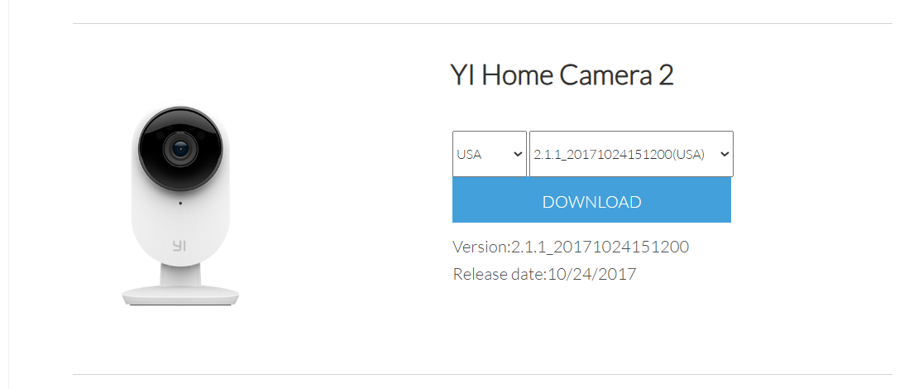
The file I pulled was 2.1.1_20171024151200home, the only version listed on the YI firmware page for this model, dated October 2017. YI cameras also receive updates via the app (OTA), but no newer builds are published on the firmware page, so there is no way to independently verify whether later versions exist, what they contain, or whether they address any of the issues described here, without physical access to a device.
A reasonable objection is that some or all of these issues may have been addressed in OTA builds since 2017. That’s possible, though all four are design-level flaws rather than implementation bugs. Addressing them would require architectural changes. Also, YI/Kami did not respond to disclosure. Without public firmware, any other similar CVE disclosure, or a vendor response, there is no way to confirm a fix.
First thing I did was run binwalk on it:
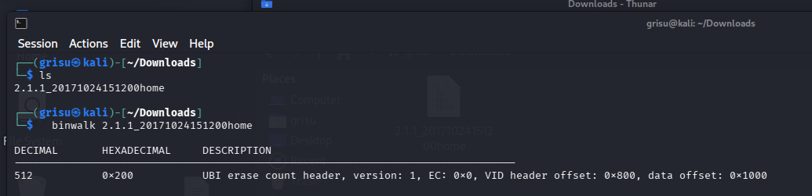
The image ships as a raw UBI filesystem. I carved and mounted it, getting a standard embedded Linux filesystem.
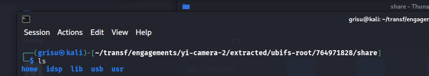
Before opening any disassembler, I used strings, grep, and find to get a quick sense of what was interesting:
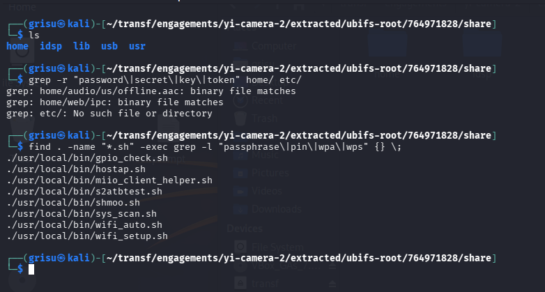
That first pass already turned up some good starting points: shell scripts mentioning hardcoded WPA passphrases and an interesting binary called ipc sitting in home/web/.
Since ipc lived in the web directory, I ran strings on it and grepped through the output:
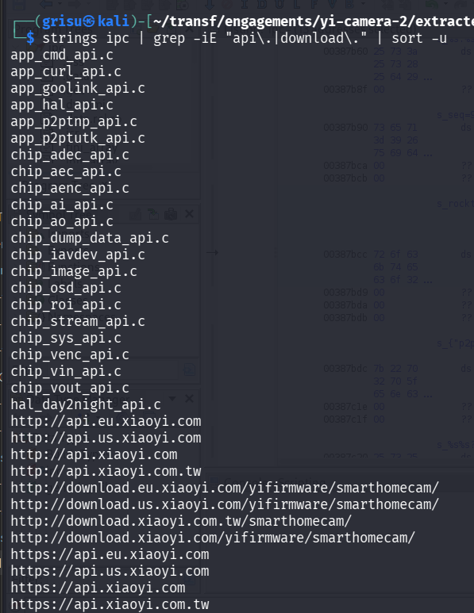
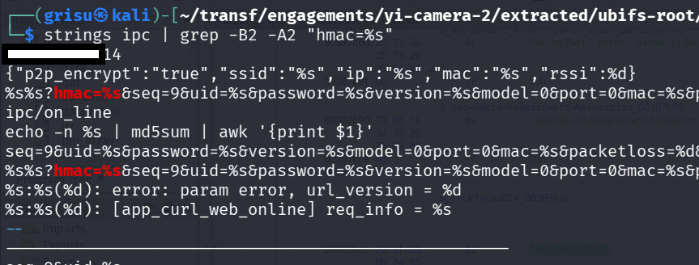
Plaintext API URLs, HTTP firmware download paths, HMAC query patterns, and a hardcoded string sitting right next to them. The CGI endpoints were in there too:
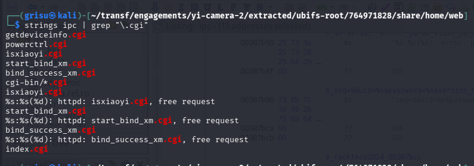
Based on this, ipc appears to be the main workhorse: HTTP server, cloud communication, firmware updates, all in one place.
I checked its security properties with checksec:
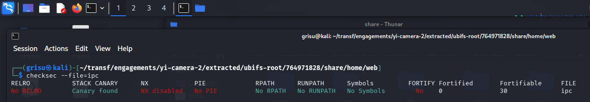
Every standard exploit mitigation is absent (no stack canaries, NX, PIE, or RELRO). The other binaries on the device (rtsp_server, upgrade_tool, miio_client, mosquitto, etc.) have the same profile.
I loaded ipc into Ghidra and started cross-referencing the strings I had flagged.
CVE-2026-4475: hardcoded HMAC-SHA1 signing key
I started by searching for cross-references to the suspicious hardcoded string in Ghidra. Every xref pointed to call sites where it was passed as the third argument to the same function: FUN_001adaf4. Here’s what that function looks like:
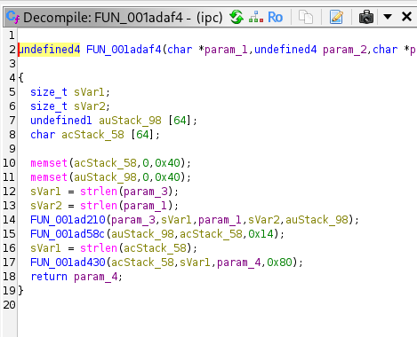
Line 14: FUN_001ad210(param_3, sVar1, param_1, sVar2, auStack_98). That’s where the actual signing happens. I followed FUN_001ad210 into its definition:
FUN_001ad210(byte *param_1, uint param_2,
undefined4 param_3, undefined4 param_4, undefined4 param_5)
{
// ...
local_168 = 0x67452301;
local_164 = 0xefcdab89;
local_160 = 0x98badcfe;
local_15c = 0x10325476;
local_158 = 0xc3d2e1f0;
// ...
memset(local_1a8, 0x36, 0x40); // ipad (0x36 × 64)
// ...
FUN_001acfa8(param_3, param_4, &local_168); // SHA-1 update with message
FUN_001acf04(&local_168, auStack_1bc); // SHA-1 final → inner hash
// ...
memset(local_1a8, 0x5c, 0x40); // opad (0x5c × 64)
// ...
FUN_001acfa8(auStack_1bc, 0x14, &local_c8); // SHA-1 update - inner hash
FUN_001acf04(&local_c8, param_5); // SHA-1 final
return 0;
}
This is a custom HMAC-SHA1 implementation (not using the OpenSSL HMAC API). You can tell from two things in the code:
- The five constants (
0x67452301,0xefcdab89,0x98badcfe,0x10325476,0xc3d2e1f0) are the SHA-1 initialization values, defined in the SHA-1 spec. - The two
memsetcalls with0x36and0x5care the HMAC inner and outer padding constants, defined in RFC 2104.
In HMAC, the key is XORed with the inner pad to produce the inner key block, and with the outer pad to produce the outer key block. In this function, that key is param_1. Looking back at the caller (FUN_001adaf4), param_1 here is param_3 from there: the hardcoded string. Here’s one of the four call sites confirming it:
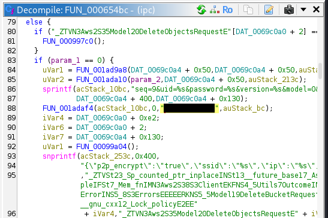
Same pattern at all four call sites. Same key, every device, every request. I checked every cross-reference to FUN_001adaf4: Heartbeat (0x65718), registration (0x66a4e), check-in (0x670ae), log upload (0x6d8bc). Every function that makes an outbound API call goes through this signing step.
In the analysed firmware, every API request is signed with the same hardcoded key. The key is in the binary. The signing format is in the binary.
Out of 12 HMAC-signed endpoints I found in the binary, only 2 (the heartbeat and online check-in) include the video password and MAC address. The other 10 require the key, the device UID, and varying combinations of timestamps, but not the password or MAC. The UID may be discoverable on the local network via the unauthenticated getdeviceinfo.cgi endpoint (CVE-2026-4476).
CVE-2026-4478: unsigned firmware updates over HTTP
Back in the strings output from ipc, I had also flagged the firmware download URLs. All plain HTTP, no TLS:
http://download.xiaoyi.com/yifirmware/smarthomecam/
http://download.eu.xiaoyi.com/yifirmware/smarthomecam/
http://download.us.xiaoyi.com/yifirmware/smarthomecam/
http://download.xiaoyi.com.tw/smarthomecam/
Searching ipc’s strings for what happens after the download, I found the command that invokes the flashing tool:
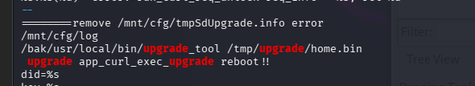
Firmware updates are normally cryptographically signed: the vendor signs the image with a private key, and the device verifies the signature before accepting it. I searched upgrade_tool’s strings for any reference to cryptographic verification:
$ strings usr/local/bin/upgrade_tool | grep -iE "sign|rsa|ecdsa|sha256|verify|certif"
Nothing. No signing, no verification, no certificates. The only validation it performs is a magic number check (does the file start with the expected header?) and CRC32 checksums (is the data intact?). Neither is a security measure.
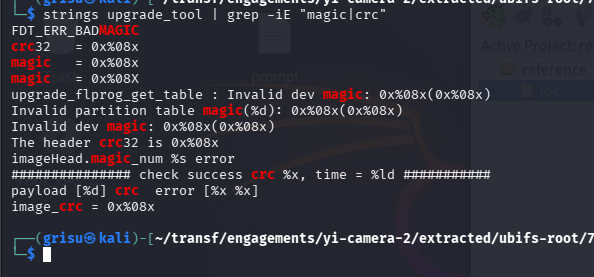
A magic number is just a few bytes at the start of the file that identify the format. CRC32 detects accidental corruption, not tampering. Anyone can compute a valid CRC32 for arbitrary data.
$ hexdump -C 2.1.1_20171024151200home | head -2
00000000 41 4e 54 53 49 4d 47 00 a0 4e 02 00 10 c9 33 01 |ANTSIMG..N....3.|
The attack requires a man-in-the-middle position between the camera and the download server at the moment it fetches firmware. The strings app_curl_get_upgrade_info and need_upgrade in the binary suggest the camera checks for updates on its own, which would make this a periodic window rather than a one-shot triggered by the user. On a local network, the MitM can be achieved via ARP poisoning. Since the update is fetched over plain HTTP, DNS hijacking also works and doesn’t require being on the same LAN.
If the MitM succeeds, the attacker serves a crafted image with the correct magic number and valid CRC32s for each segment. The camera flashes it. upgrade_tool writes directly to NAND flash via MTD devices. From static analysis I found no indication of a read-only recovery mechanism that could restore clean firmware. If that holds, the compromise is persistent.
I tested the download URLs at time of writing. The EU and US servers (download.eu.xiaoyi.com, download.us.xiaoyi.com) still serve the full 32MB firmware image over plain HTTP.
CVE-2026-4476 and CVE-2026-4477: unauthenticated endpoints and hardcoded WiFi credentials
Two other lower-severity issues:
ipc runs an embedded HTTP server on the LAN. It exposes several CGI endpoints. In Ghidra, I followed the endpoint strings to the dispatch logic at FUN_000a0de4:
int FUN_000a0de4(char *param_1)
{
int local_c = 0;
while (local_c < 100) {
if ((&PTR_s_getdeviceinfo.cgi_00448bbc)[local_c] == NULL) break;
if (strstr(param_1, (&PTR_s_getdeviceinfo.cgi_00448bbc)[local_c]) != NULL) {
return local_c;
}
local_c = local_c + 1;
}
return -1;
}
The function uses strstr() instead of strcmp() to match endpoint names. That means substring matching: a request to /anything/powerctrl.cgi/anything would still match powerctrl.cgi and get routed to its handler.
I decompiled every handler in the dispatch table. None of them check any form of authentication. The HTTP server library they built on supports auth (I saw WWW-Authenticate: Basic realm= and Authorization required in the binary’s strings), but it’s never called. The endpoints are just open.
The one that stood out is bind_success_xm.cgi. In the Xiaomi ecosystem, “binding” apparently means linking a device to a user’s cloud account. Here’s what the handler does:
// FUN_000a1a24 — bind_success_xm.cgi handler
snprintf(local_14, ..., “HTTP/1.0 200 OK\r\n\r\n{start:\”\”,”);
iVar1 = FUN_000a0f04(param_1, param_2, param_3, param_4, auStack_604, 0x5ec);
if (iVar1 < 0) {
// log “cgi_receive_info fail”
} else {
*(undefined4 *)(DAT_00c88e18 + 0xbc) = 1;
*(undefined4 *)(DAT_00c88e18 + 0xc0) = 1;
// log “do_cgi_bind_success”
}
snprintf(local_14, ..., “end:\”\”}”);
Send HTTP 200, read the request body, set two flags, log success. No token, no challenge, no check on who is asking. Whether calling this endpoint alone is sufficient to claim a device I cannot determine from static analysis alone, but the firmware side has no access control on any endpoint.
Separately, when the camera enters AP mode during initial setup or factory reset, the WiFi credentials are hardcoded in the shell scripts:
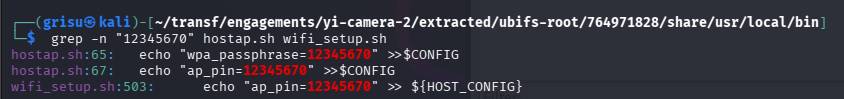
12345670. In hostap.sh, this value is used as both the WPS PIN and the WPA passphrase. In wifi_setup.sh, it sets the WPS PIN. No per-device randomization. The attack window is narrow: only during initial setup or after a factory reset.
Impact
Everything here is from static analysis. I did not test on a live device or against the live cloud API.
The hardcoded HMAC key (CVE-2026-4475, CVSS 8.7) means every YI Home Camera 2 authenticates to the cloud with the same shared secret. HMAC is supposed to prove a request came from a legitimate device; since every device uses the same key, that proof is effectively broken. An attacker with the key and a target device’s UID can construct validly signed requests for 10 of the 12 HMAC-signed endpoints in the binary. The cryptographic layer is broken by design.
The unsigned firmware path (CVE-2026-4478, CVSS 9.2) has the most severe potential consequences. The firmware download servers are still live and serving over plain HTTP. A successful MitM could deliver persistent root access to a device with a camera and microphone inside someone’s home. Since firmware is written directly to NAND with no signature check, a crafted image that boots correctly would survive reboots.
The vendor did not respond to disclosure. No patched firmware has been published on their download page. Whether OTA builds have addressed any of these issues is not verifiable without physical access to a device. Based on what is publicly available, these flaws remain present and unaddressed.
Till next time 🚀
Timeline
| Date | Event |
|---|---|
| 2026‑03‑05 | Attempted contact via support@kamivision.com, the only available contact address. YI Technology lists no dedicated security contact or PSIRT. |
| 2026‑03‑19 | CVE-2026-4475, CVE-2026-4476, CVE-2026-4477, CVE-2026-4478 assigned. No vendor response. |
| 2026‑03‑31 | Public disclosure. |